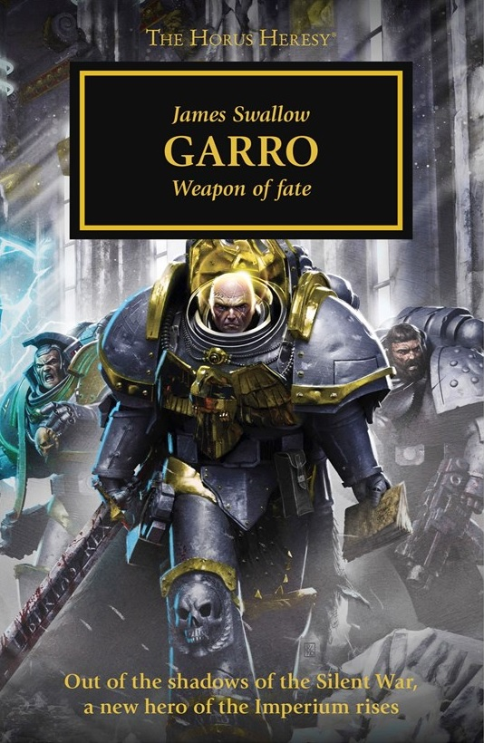

GARRO: VOW OF FAITH

Author: James Swallow
Format: Novella
Filled with doubts about the war and his place in it, Nathaniel Garro abandons his duties and goes looking for the woman who once saved his life. His search takes him across more of Terra than he has ever seen.
Introduction reviewed against Black Library’s description on 2026-09-27. The publisher page may contain spoilers.
Publication facts: publisher source, checked 2026-09-26.
Open this work in the interactive Archive to track reading progress and explore related works.
Take the three-question memory check for this work. The quiz contains story spoilers.